02 / PHOTOGRAPHY / FIELD NOTES
光影之旅
我在城市的垂直线、山谷的云层和展厅的暗处之间来回。摄影是等待光线自己显形，也是给记忆留下一种可见的结构。
11 FRAME NOTES2023—2026 / CN
观看的
几种尺度
先从天空和城市的远景开始，再靠近水面、墙体和室内的微小开口。顺序不是路线，而是一种慢慢收紧的注意力。
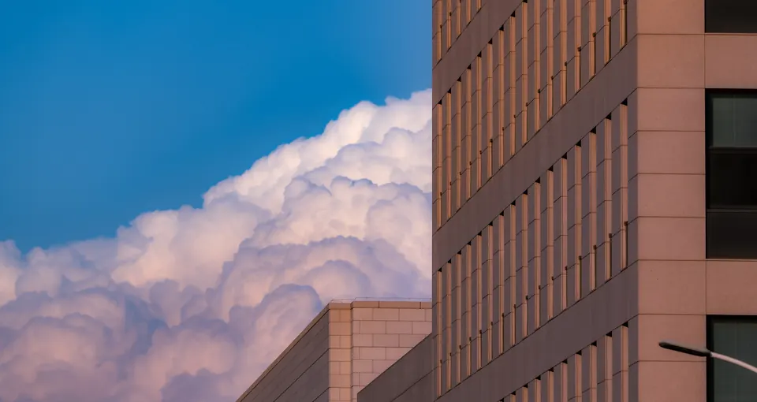
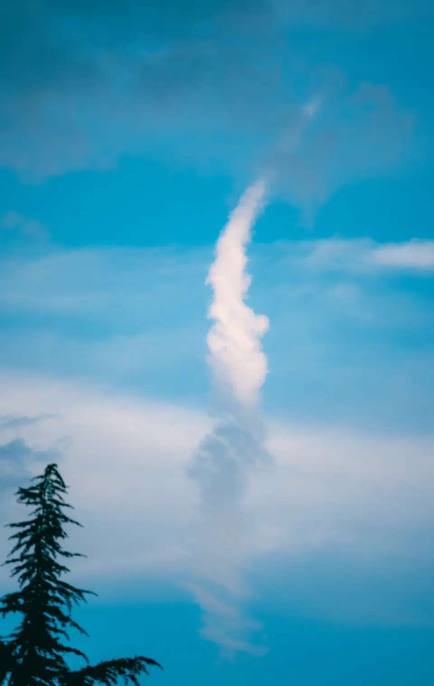
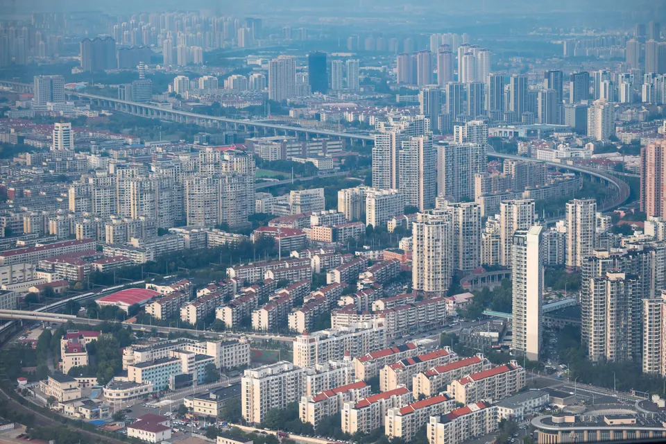
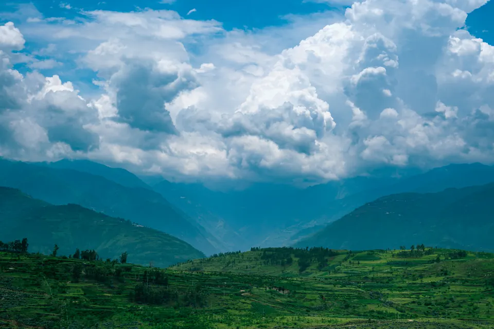
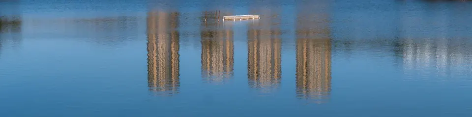
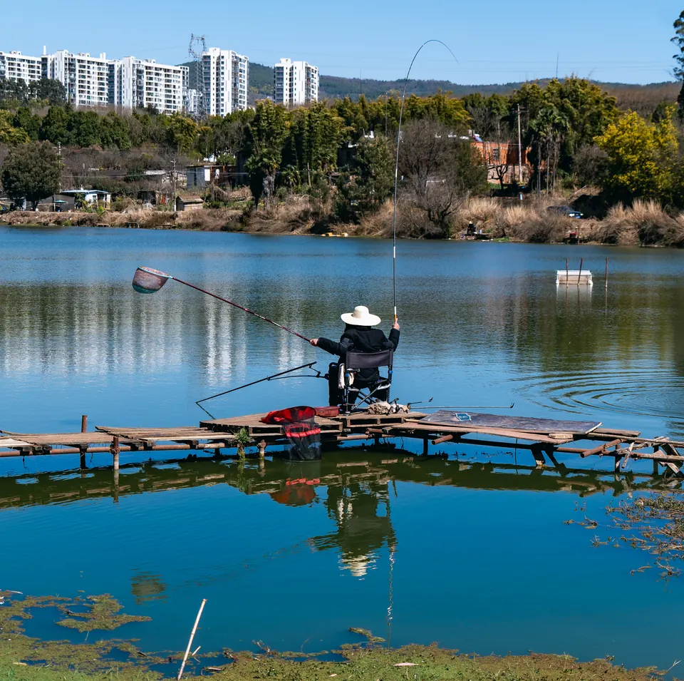
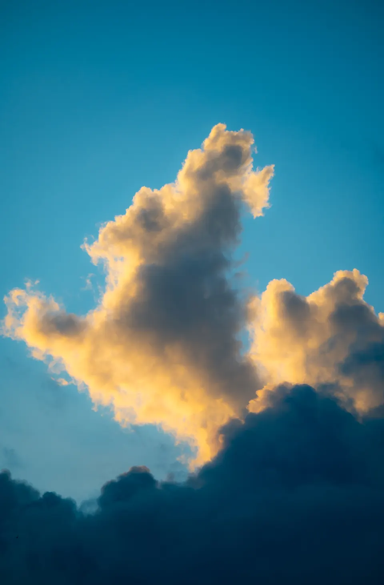
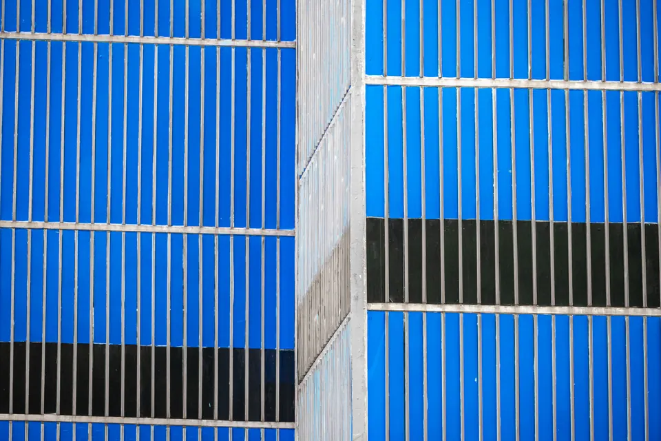
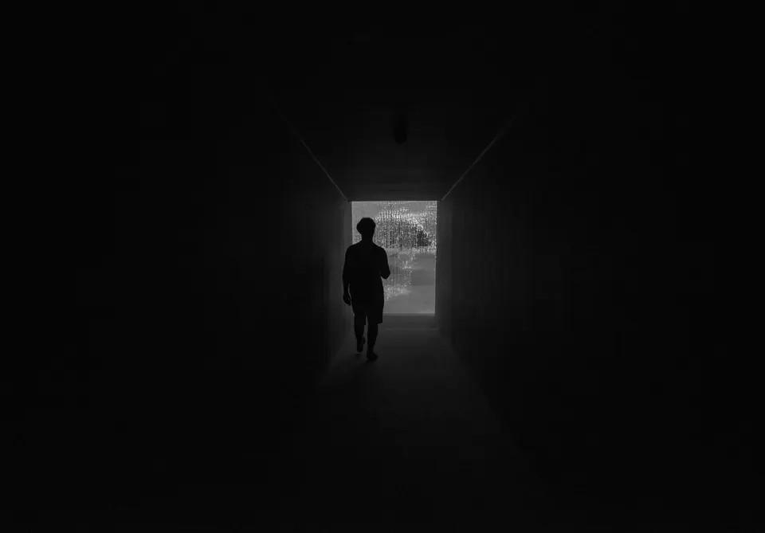
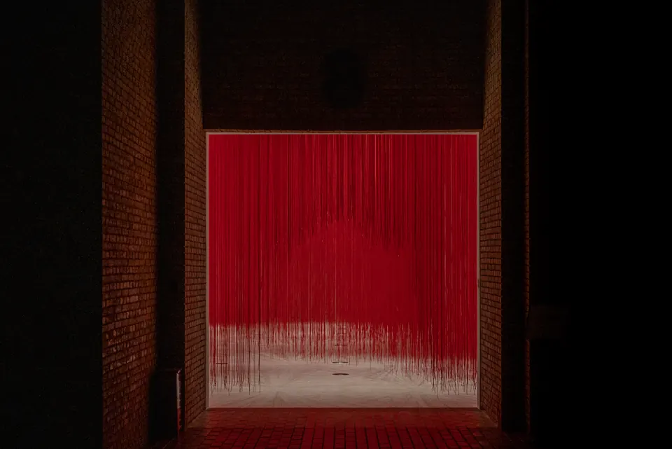
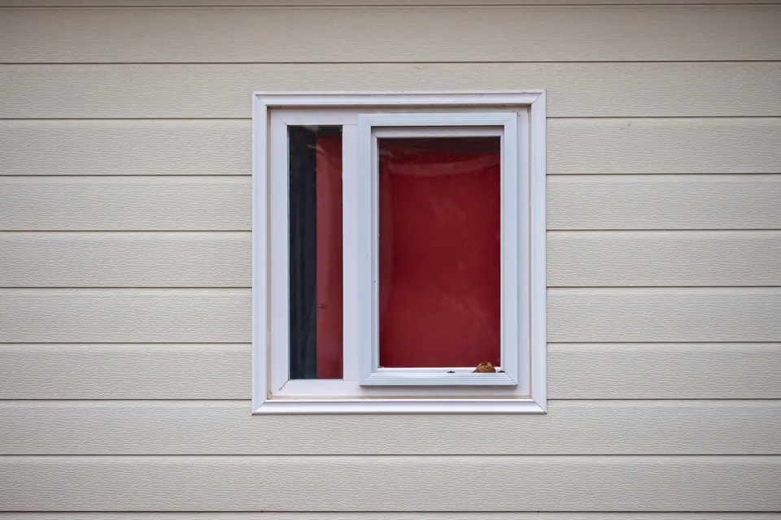
解释抵达。
这组照片暂以“现场笔记”的方式呈现。后续可以继续补充拍摄日期、地点地图、相机与镜头信息，以及按系列筛选、单张放大和下载授权等功能。